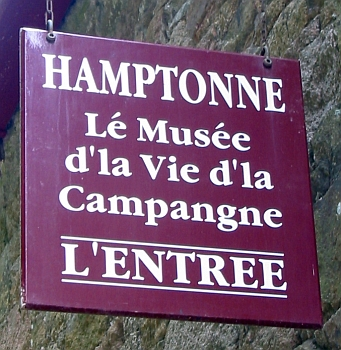

Hamptonne

Hamptonne est l'Mûsée d'la Vie d'la Campangne dé Jèrri d'pis 1994.
La fêrme fut acatée par l's Êtats d'Jèrri et l'National Trust dé Jèrri en 1987. La Société Jersiaise avait héthité par l'testament d'Eric Young eune collection d'boutelles à sno qu'ou vendit à seule fîn d'payi la restaurâtion d'Hamptonne. L'Héthitage d'Jèrri a la responsabilité d'mênagi l'site.
Hamptonne 'tait eune fèrme qué des généthâtions d'fanmil'yes faîthaient valer: les fanmil'yes Langliais, Hamptonne et Syvret.
La Maîson Hamptonne
La Maîson Hamptonne fut bâtie dans les 1430s coumme eune grande halle ouèrte ès rouaies. Ch'éthait 'té où'est qu'nou dormait, coutchait, mangeait et ofûche gardait des bêtes. Un siècl'ye pus tard lé preunmié êtage fut ajouôté à seule fîn d'aver des chambres à dormi et des salles pouor atchilyi d's învités. La montée en pièrre fut ajouôtée en driéthe pouor faithe l'accès à l'êtage.
Eune douaithiéthe fut ajouôtée d'vièrs la fîn du dgiêx-septchième siècl'ye; ch'est un tchièrs d'la maîson pouor louogi eune veuve.
L'êtat d'achteu d'la maîson présente les années 1640s quand Laurens Hamptonne y d'meuthait.
La Maîson Langliais
La caûminne à un êtage (à gauche) fut bâtie en 1445. Lé deuxième êtage fut ajouôté au dgiêx-septchième siècl'ye. Ès bas y'avait des ch'lièrs et d's êtabl'yes pouor les bêtes, et les gens d'meuthaient à l'êtage. Eune montée en d'houors montent à l'êtage. La caleu des bêtes dans l's êtabl'yes caûffaient l'êtage. Chu bâtisse a 'té restauré pouor èrprésenter la fîn du dgiêx-huitchième siècl'ye.
La Maîson Syvret
Chutte maîson 'tait grande pouor eune maîson d'fèrme quand ou fut bâtie dans l's années 1830s. V'là tchi r'sembl'ye pus à co à eune maîson d'ville dé chu temps-là. Y'a un preinseu au but d'la maîson, auve un tou d'preinseu, un deux-vis et des bathis et ôtis pouor la faîs'sie d'cidre.
Lé colombyi
D'l'aut' bord d'la rue y'a l'colombyi. Bâti par R'chard Langliais au tchînzième siècl'ye, i' fut r'bâti en 1674. Y'a raîque deux colombièrs cârrés dans l'Île.
L's offices et apparténances
Au dgiêx-neuvième siècl'ye, des offices et apparténances fûtent bâties au Nord: d's êtabl'yes à j'va, eune tchèrquéthie, eune boulangu'thie, eune lav'thie, du louogeais d'valet.
Pouor la lav'thie aut'fais nou-s'éthait emporter l'lînge au dou à laver, mais eune lav'thie pus modèrne pèrmettait d'caûffer l'ieau dans l'cappeur épis faithe sèrvi l'maing'lye pouor juser l'lînge et des fièrs pouor l'féther.
La p'tite maîson est située à eune pétite distance des maîsons. D'la mauve 'tait pliantée au ras d'la p'tite maîson; ses fielles sèrvaient un run d'papi.
La cotte à couochons abriait des bêtes à saie. La tueûthie donnait du lard pouor saler dans l'auge pouor lé prêsèrver.
Lé gardîn à pommièrs
Lé gardîn a 'té plianté auve des vâriêtés d'pommes Jèrriaises, des douoches et des suthes pouor êt' êtanmpées pouor la faîs'sie d'cidre.
La Tchèrquéthie Joan Stevens fut înnaudguthée en 2024. Ch'est eune salle d'exhibition pouor raconter l'histouaithe d'la vie d'la campangne. Lé mûsée d'agritchultuthe tchi soulait êt' à La Hougue Bie 'tait app'lé "la tchèrquéthie".
Viyiz étout: